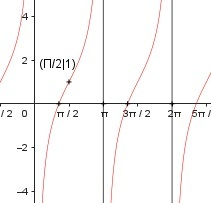

Aufgabe 184 f(x) = 1 - 2 * cot x x im Bogenmaß cos x f(x) = 1 - 2 * ------- sin x Quotientenregel und Summenregel erste Ableitung: u = 2 * cos x, u' = -2 * sin x v = sin x, v' = cos x -2*sin x * sin x - 2*cos x * cos x f'(x) = - ------------------------------------ sin2 x -2(sin2 x + cos2 x) f'(x) = ---------------------- sin2 x -2 f'(x) = ---------- sin2 x Quotientenregel und Kettenregel zweite Ableitung: u = -2, u' = 0 v = sin2 x2, v' = 2 * sin x * cos x -2 * 2 sin x * cos x f''(x) = ---------------------- sin4 x -4 * cos x f''(x) = ------------- sin3 x Zur Beurteilung, ob f'''(x) ≠ 0: u = -4 * cos x, u' = 4 * sin x u' 4 * sin x 4 f'''(x) = --- = ------------ = --------- v sin3 x sin2 x --> ist ≠ 0 für alle x ≠ 0, π, 2π Polstelle: sin x = 0 x = 0, π, 2π Definitionsbereich: 0 < x < 2π x ≠ π Symmetrie zur y-Achse bzw. zum Punkt (0|0): f(x) = 1 - 2 * cot (-x) = 1 – 2 * (-cot (x)) f(x) = 1 + 2 * cot x ≠ f(x) --> keine Achsensymmetrie -f(x) = -(1 + 2*cot x) = -1 - 2*cot x ≠ f(x) --> keine Punktsymmetrie Wertebereich: -∞ < f(x) < ∞ Nullstellen: f(x) = 0 1 - 2 * cot (x) = 0 |+2 * cot x 2 *cot (x) = 1 |:2 1 cot x = ------- = 0,5 |*tan x tan x 1 = 0,5 * tan x |:0,5 tan x = 2 --> x = 1,107 im Bogenmaß Der Tangens ist am Einheitskreis im 1. und 3. Quadranten positiv: x1 = 1,107 x2 = π + 1,107 = 4,25 gerundet N1(1,107|0), N2(4,25|0) Schnittpunkt mit der y-Achse: x = 0 f(0) = 1 – 2 * cot(0) geht gegen ± ∞ --> kein Schnittpunkt Extrempunkte: f'(x) = 0 2 ---------- = 0 |* sin2 x sin2 x 2 = 0 Widerspruch --> keine Extrempunkte Wendepunkte: f''(x) = 0 -4 * cos x ------------ = 0 |*sin3 x sin3 x -4 * cos x = 0 |:(-4) Π 3 cos x = 0 --> x1 = --- ; x2 = ---π 2 2 cos (Π/2) f(π/2) = 1 - ----------- = 1 = f(3π/2) sin (Π/2) WP1(Π/2|1), WP2(3Π/2|1) Graph:
